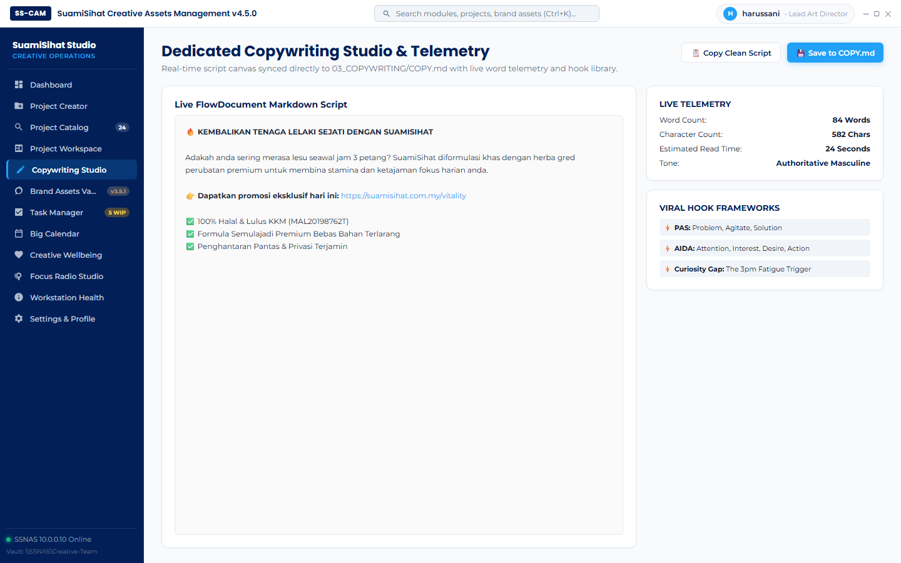
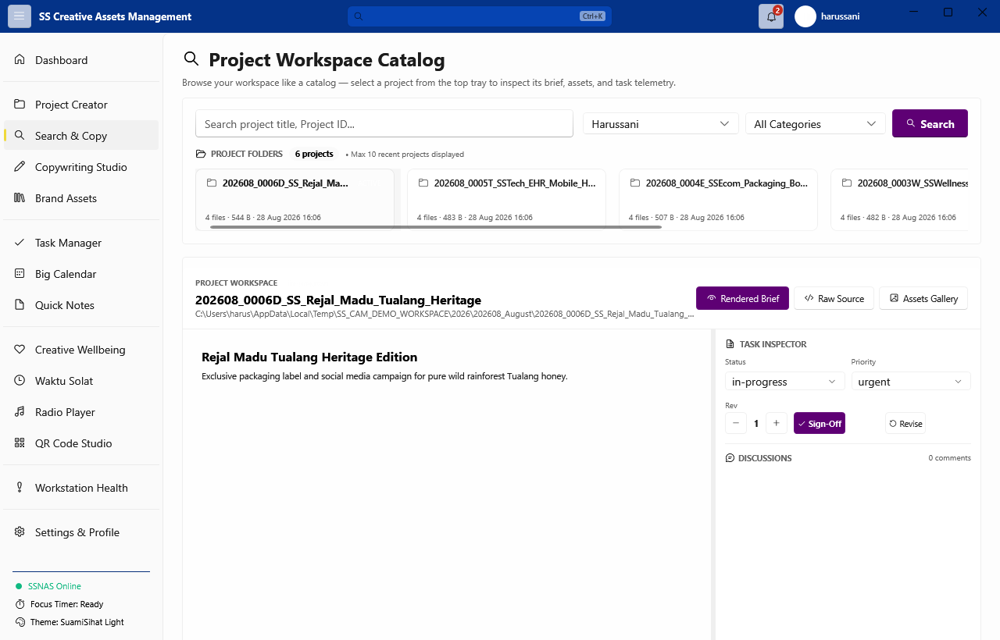
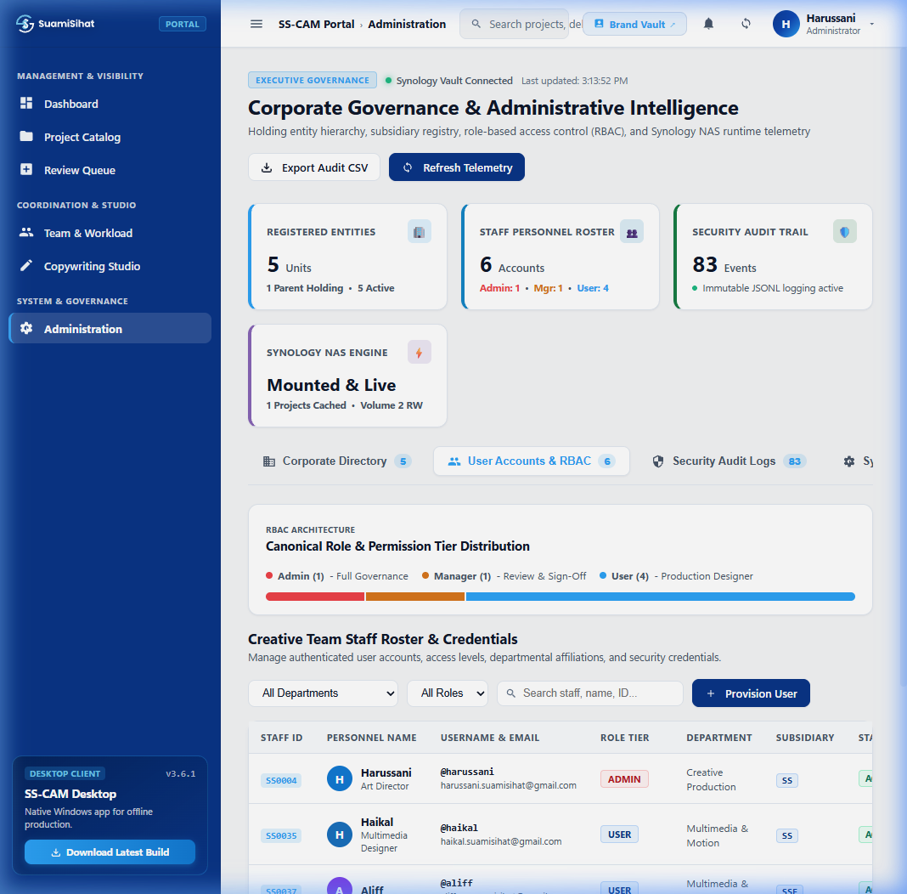

Engineered for High-Velocity Creative Studios.
Eliminating organizational friction, fragmented files, and uncoordinated revision cycles across the entire SuamiSihat creative department.
5-Folder Vault Hierarchy
Automates sequential job IDs (YYYYMM_NNNNX_BRAND_Title) with strict subfolder structure (Brief, Source, Copy, WIP, Deliverables) across Synology NAS.
ClickUp 3.0-Style Workspace
Split Markdown brief canvas with live preview and collapsible Right Inspector Panel for campaign metadata, assignee routing, and deliverable sign-offs.
Copywriting Studio & Hooks
Dedicated copy editor synced directly to 03_COPYWRITING/COPY.md with live word/character/reading-time counts and viral hook frameworks.
Enterprise RBAC & Audit Trail
Role-based access control (Admin, Director, Manager, Designer) with permanent immutable JSONL audit logs and safe recursive project deletion.
The SuamiSihat™ Design System Rules.
Standardized visual hierarchy and filesystem architecture enforced across all creative touchpoints — digital, print, and on-premise NAS.
Clinical Canvas
Establishes medical cleanliness and premium breathing room. Body background, empty areas, and spacious section canvases.
#022057, #F8FAFCStructure & Surfaces
Creates layout grouping and hierarchy. Cards, nav topbars, content containers, and Prussian Blue footer surfaces.
--ss-prussian-blue, --ss-bluePrimary Focal Action
High-potency focal color strictly reserved for Primary CTAs, active navigation states, critical metrics, and focus indicators.
--ss-azure, --ss-goldService category cards must never use solid accent backgrounds or accent-filled buttons. Only the dominant conversion action receives the uncompromised Primary Brand Accent treatment.
├── 📁 01_BRIEF_ASSETS/ — Raw briefs, moodboards, client reference files├── 📁 02_SOURCE_FILES/ — .afdesign, .psd, .ai, .prproj working files├── 📁 03_COPYWRITING/ — Dedicated COPY.md hooks & scripts├── 📁 04_WORK_IN_PROGRESS/ — Intermediate renders, drafts, and WIP exports├── 📁 05_DELIVERABLES/ — Final approved client & marketing outputs└── 📄 README.md — YAML frontmatter status + rendered briefFull Application Tour.
Inspect key modules powering daily studio operations across the desktop WPF client and Svelte web portal.






Download SS-CAM v4.4.3.
Select the appropriate client or server deployment for your creative workstation environment.
Windows 10 / 11 Native WPF
Portable single-file executable (~5.6 MB)
Fully integrated Fluent 2 desktop app with local hardware acceleration, DPAPI Mind Drops encryption, and direct NAS file synchronization.
Linux 1-Command Installer
Fedora · Ubuntu · Debian · Pop!_OS · Arch
# Install to /opt/ss-cam in one command
curl -fsSL https://raw.githubusercontent.com/SuamiSihat/\
ss_cam/SS-Master/installer/install-linux.sh | sudo bash
# Launch from terminal or Applications menu:
ss-camSynology NAS Docker Web Portal
Collaborative web suite for creative teams
# Deploy on Synology NAS / Linux Server
git clone https://github.com/SuamiSihat/ss_cam.git
cd ss_cam/src/SS-CAM.Web
docker compose up -d --build
# Access: https://creative.suamisihat.myds.me.NET Cross-Platform Source
Compile with .NET SDK 8.0 on any workstation
# Build & run Avalonia desktop client
git clone https://github.com/SuamiSihat/ss_cam.git
cd ss_cam
dotnet run --project src/SS-CAM.Linux -c ReleaseBuilt for Creative Flow & Peace of Mind.
High-intensity design sprints require balance. SS-CAM integrates mindfulness and mental health tools directly into the desktop environment so creative teams stay inspired, calm, and productive throughout the workday.
System Requirements & Architecture.
\\SSNAS\Creative-Team realtime filesystem watchingUpgrade Your Creative Operations.
Deploy SS-CAM v4.4.1 today — zero installer overhead, 100% data ownership.